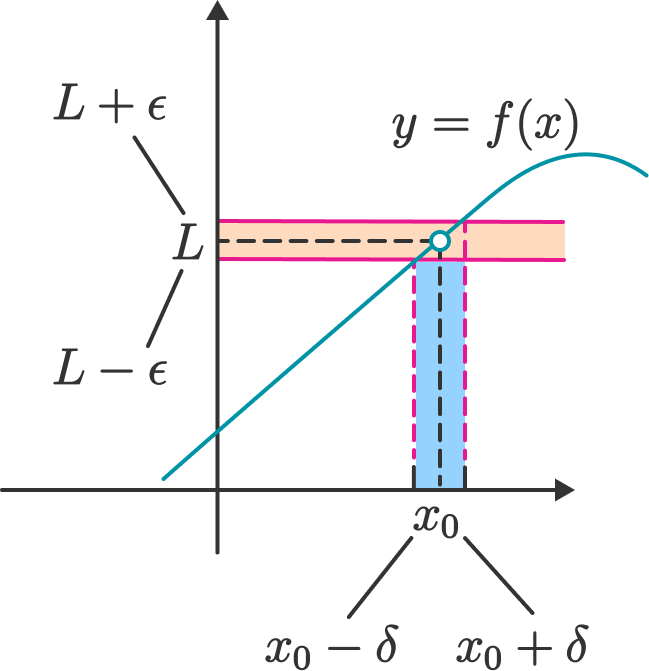

Definicija i temeljna teorija
Limes niza
Funkciju \(a \colon \mathbb{N} \to S\) zovemo niz u \(S\).
Uobičajena oznaka funkcijskih vrijednosti je \(a(n)=a_n\), a oznaka niza \((a_n)_{n \in \mathbb{N}}\), \((a_n)_n\) ili samo \((a_n)\).
Primjeri nekih nizova:
- \(a_n = \frac{1}{n}, \ \forall n \in \mathbb{N}\) niz je u \(\mathbb{R}\)
- \(a_n = n+\frac{i}{n}, \ \forall n \in \mathbb{N}\) niz je u \(\mathbb{C}\)
- \(a_n(x)= \sin (nx)\) niz realnih funkcija
Neka je \((a_n)_n\) niz u \(\mathbb{R}\). Niz \((a_n)_n\) je:
- rastući ako \(\forall n \in \mathbb{N}, a_n \leq a_{n+1}\)
- strogo rastući ako \(\forall n \in \mathbb{N}, a_n < a_{n+1}\)
- padajući ako \(\forall n \in \mathbb{N}, a_n \geq a_{n+1}\)
- strogo padajući ako \(\forall n \in \mathbb{N}, a_n > a_{n+1}\)
Definicija monotonosti niza odgovara našoj intuiciji. Doduše, za nizove u \(\mathbb{R}^n\) nećemo moći govoriti o monotonosti, ali uvest ćemo pojam ograničenosti.
Definirajmo sada limes:
Niz realnih brojeva \((a_n)_n\) konvergira ili teži k realnom broju \(a \in \mathbb{R}\) ako svaki otvoreni interval polumjera \(\varepsilon\) oko točke \(a\) sadrži gotovo sve članove niza, tj. \[ (\forall \varepsilon > 0)(\exists n_{\varepsilon} \in \mathbb{N})(\forall n \in \mathbb{N}) ((n > n_{\varepsilon}) \rightarrow (|a_n - a| < \varepsilon)) \]
Tada \(a\) zovemo granična vrijednost ili limes niza \((a_n)_n\) i pišemo \(a = \lim_{n \to \infty} a_n\).
Ako niz ne konvergira, kažemo da divergira.
Možemo definirati i konvergenciju prema \(+ \infty\) i \(- \infty\), ali trenutno nema potrebe za to. Sada navodimo neke bitne rezultate, ali bez dokaza.
- Konvergentan niz u \(\mathbb{R}\) ima samo jednu graničnu vrijednost.
- Konvergentan niz u \(\mathbb{R}\) je ograničen.
Svaki monoton i ograničen niz u \(\mathbb{R}\) je konvergentan.
Neka su \((a_n)_n\) i \((b_n)_n\) konvergentni nizovi u \(\mathbb{R}\). Tada vrijedi:
- Niz \((a_n \pm b_n)_n\) je konvergentan i vrijedi \(\displaystyle \lim_{n \to \infty}(a_n \pm b_n)_n = \lim_{n \to \infty} a_n \pm \lim_{n \to \infty} b_n\)
- Niz \((a_n \cdot b_n)_n\) je konvergentan i \(\displaystyle \lim_{n \to \infty} (a_n \cdot b_n)_n = \lim_{n \to \infty} a_n \cdot \lim_{n \to \infty} b_n\)
- Ako je \(\forall n \in \mathbb{N}, b_n \neq 0\) i \(\displaystyle \lim_{n \to \infty} b_n \neq 0\), onda je niz \(\displaystyle \left (\frac{a_n}{b_n} \right)_n\) konvergentan i vrijedi \(\displaystyle \lim_{n \to \infty} \left (\frac{a_n}{b_n} \right)_n = \displaystyle \frac{\displaystyle \lim_{n \to \infty} a_n}{\displaystyle\lim_{n \to \infty} b_n}\)
- Niz \((|a_n|)_n\) je konvergentan i \(\displaystyle\lim_{n \to \infty} |a_n| = |\displaystyle \lim_{n \to \infty} a_n|\)
Neka su \(\displaystyle \lim_{n \to \infty} a_n = a\) i \(\displaystyle \lim_{n \to \infty} b_n = b\). Tada je za sve \(\lambda, \mu \in \mathbb{R}\) niz \((\lambda a_n + \mu b_n)_n\) konvergent i vrijedi \(\displaystyle \lim_{n \to \infty} (\lambda a_n + \mu b_n) = \lambda a + \mu b\).
Iz prethodnog teorema i korolara vidimo da je skup svih konvergentnih nizova u \(\mathbb{R}\) zatvoren na linearne kombinacije svojih elemenata, stoga zaključujemo da je skup konvergentnih nizova u \(\mathbb{R}\) vektorski prostor.
Limes funkcije
Sada prelazimo na limes funkcija, sljedećom definicijom vidimo vezu s limesom niza:
Neka je \(I \subseteq \mathbb{R}\) otvoreni interval i \(c \in I\). Za funkciju \(f \colon I \backslash \{c\} \to \mathbb{R}\) kažemo da ima limes u točki \(c\) jednak \(L\) ako za svaki niz \((c_n)_n\) u \(I \backslash \{c\}\) vrijedi \[ \lim_{n \to \infty} c_n = c \Rightarrow \lim_{n \to \infty} f(c_n) = L \]
Tada pišemo \(\displaystyle \lim_{x \to c} f(x) = L\).
Iz definicije je vidljivo da je približavanje broja \(x\) prema \(c\) ekvivalentno približavanju svih nizova koji konvergiraju k točki \(c\). Dakle, u definiciji je potrebno promatrati sve takve nizove, a ne samo jedan niz ili njih konačno mnogo. Tada se slike tih nizova po funkciji \(f\) moraju približavati istom broju \(L\). S druge strane, nizovi koji konvergiraju k \(c\) imaju točke i lijevo i desno od \(c\) pa je prirodno pretpostaviti da je točka \(c\) iz nekog otvorenog intervala koji je sadržan u domeni funkcije \(f\).
Pojam limesa funkcije moguće je definirati i bez nizova i to je sadržaj Cauchyjeve definicije limesa:
Neka je \(I \subseteq \mathbb{R}\) otvoreni interval, \(c \in I\) i \(f \colon I \backslash \{c\} \to \mathbb{R}\). Limes funkcije \(f\) u točki \(c\) postoji i \(\lim_{x \to c} f(x) = L\) ako i samo ako vrijedi: \[ (\forall \varepsilon > 0)(\exists \delta > 0)(\forall x \in I)((0 < |x-c| < \delta) \rightarrow (|f(x) - L| < \varepsilon)) \]
Cauchyjeva definicija ima intuitivnu geometrijsku interpretaciju. Za svaku okolinu \(\langle L− \varepsilon,L+ \varepsilon \rangle\) broja \(L\) postoji okolina \(\langle c− \delta, c + \delta \rangle\) broja \(c\) koja se, s izuzetkom točke \(c\), preslikava u okolinu \(\langle L− \varepsilon,L+ \varepsilon \rangle\), tj. \[ f(\langle c− \delta, c + \delta \rangle \backslash \{c\}) \subseteq \langle L− \varepsilon,L+ \varepsilon \rangle \]
Limes funkcije u skladu je s operacija zbrajanja, oduzimanja, množenja i dijeljenja:
Neka je \(I \subseteq \mathbb{R}\) otvoreni interval, \(c \in I\) i \(f,g \colon I \backslash \{c\} \to \mathbb{R}\) za koje postoje \(\displaystyle \lim_{x \to c} f(x)\) i \(\displaystyle \lim_{x \to c} g(x)\). Tada vrijedi:
- Funkcija \(f \pm g\) ima limes u \(c\) i vrijedi \(\displaystyle \lim_{x \to c} (f(x) \pm g(x)) = \lim_{x \to c} f(x) \pm \lim_{x \to c} g(x)\)
- Za svaki \(\lambda \in \mathbb{R}\) funkcija \(\lambda f\) ima limes u \(c\) i vrijedi \(\displaystyle \lim_{x \to c} \lambda f(x) = \lambda \lim_{x \to c} f(x)\)
- Funkcije \(fg\) ima limes u \(c\) i vrijedi \(\displaystyle \lim_{x \to c} (f(x)g(x)) = \lim_{x \to c} f(x) \lim_{x \to c} g(x)\)
- Ako je \(g(x) \neq 0, \forall x \in I \backslash \{c\}\) i \(\displaystyle \lim_{x \to c} g(x) \neq 0\), onda je funkcija \(\displaystyle \frac{f}{g}\) ima limes u \(c\) i vrijedi \(\displaystyle \lim_{x \to c} \left (\displaystyle \frac{f(x)}{g(x)} \right) = \frac{\displaystyle \lim_{x \to c} f(x)}{\displaystyle \lim_{x \to c} g(x)}\)
- Funkcija \(|f|\) ima limes u \(c\) i \(\displaystyle \lim_{x \to c} |f(x)| = |\displaystyle \lim_{x \to c} f(x)|\)
Kao i kod nizova, možemo definirati limes u \(\pm \infty\).
Definirajmo sada lijevi i desni limesi.
Neka je \(I \subseteq \mathbb{R}\) otvoreni interval i \(c \in I\). Za funkciju \(f \colon I \backslash \{c\} \to \mathbb{R}\) kažemo da ima
- limes slijeva u točki \(c\) jednak \(L\) ako vrijedi \[ (\forall \varepsilon > 0)(\exists \delta > 0)(\forall x \in I)((0 < c-x < \delta) \rightarrow (|f(x) - L| < \varepsilon)) \]
Tada pišemo \(\displaystyle \lim_{x \to c-} f(x) = f(c-) = L\).
- limes slijeva u točki \(c\) jednak \(L\) ako vrijedi \[ (\forall \varepsilon > 0)(\exists \delta > 0)(\forall x \in I)((0 < x-c < \delta) \rightarrow (|f(x) - L| < \varepsilon)) \]
Tada pišemo \(\displaystyle \lim_{x \to c+} f(x) = f(c+) = L\).
Uzmimo za ilustraciju funkciju \(f\) definiranu kao \[ f(x) = \begin{cases} 1 & x > 1 \\ 0 & x = 0 \\ -1 & x < -1 \end{cases} \]
\[ \lim_{x \to 0-} f(x) = -1 \neq 1 = \lim_{x \to 0+} f(x) \]
Vidimo da se lijevi i desni limes razlikuju u točki \(c=0\) pa pomoću sljedećeg rezultata zaključujemo da limes ove funkcije u točki \(c=0\) ne postoji.
Neka je \(I \subseteq \mathbb{R}\) otvoreni interval, \(c \in I\) i \(f \colon I \backslash \{c\} \to \mathbb{R}\). Za funkciju \(f\) postoji \(\displaystyle \lim_{x \to c} f(x)\) ako i samo postoje i jednaki su \(\displaystyle \lim_{x \to c-} f(x)\) i \(\displaystyle \lim_{x \to c+} f(x)\).
Neprekidnost
Neka je \(I \subseteq \mathbb{R}\) otvoreni interval i \(c \in I\). Za funkciju \(f \colon I \to \mathbb{R}\) kažemo da je neprekidna u točki \(c\) ako postoji limes funkcije \(f\) u točki \(c\) i \(\displaystyle \lim_{x \to c} f(x) = f(c)\). Funkcija \(f\) je neprekidna na skupu \(I\) ako je neprekidna u svakoj točki \(c \in I\).
Slikovito rečeno, grafove neprekidnih funkcija možemo nacrtati potezom ruke bez odizanja olovke s papira.
Iskažimo Cauchyjevu definiciju:
Neka je \(I \subseteq \mathbb{R}\) otvoreni interval, \(c \in I\) i \(f \colon I \to \mathbb{R}\). Funkcija \(f\) je neprekidna u točki \(c\) ako i samo ako vrijedi: \[ (\forall \varepsilon > 0)(\exists \delta > 0)(\forall x \in I)((|x-c| < \delta) \rightarrow (|f(x) - f(c)| < \varepsilon)) \]
Imamo jednostavnu interpretaciju: za svaku okolinu točke \(c\) slika te okoline po neprekidnoj funkciji \(f\) je okolina točke \(f(c)\).

Pokažimo da je funkcija \(f(x) = x^2\) neprekidna u točki \(c = 1\). Neka je \(\varepsilon > 0\). Trebamo naći \(\delta > 0\) takvo da vrijedi: \[ |x - 1| < \delta \Rightarrow |f(x) - f(1)| < \varepsilon \]
\[ |f(x) - f(1)| = |x^2 - 1| = |(x-1)(x+1)| < \varepsilon \]
Ocijenimo sada \(|x+1|\): \[ |x+1| = |x-1 + 2| \leq |x-1| + 2 < \delta + 2 \]
Sada imamo \[ |f(x) - f(1)| = |x^2 - 1| = |(x-1)(x+1)| < \delta(\delta + 2) < \varepsilon \]
Dodajmo uvjet \(\delta < 1\) i dobijemo \(\delta(\delta + 2) < 3\delta\). Sada možemo odabrati \(\delta = \min \left\{1, \frac{\varepsilon}{3} \right\}\) i time smo pokazali da je funkcija \(f(x) = x^2\) neprekidna u točki \(c = 1\).
Napomena: u zadatci u kojima je potrebno pokazati neprekidnost neke funkcije najbitnije je dobro baratati nejednakostima i ocjenama, a tu nam najviše koristi nejednakost trokuta (\(|a+b| \leq |a| + |b|\)) i svojstvo apsolutne vrijednosti.
Sljedeći teorem poznat nam je iz analogona za nizove i limese funkcija:
Neka je \(I \subseteq \mathbb{R}\) otvoreni interval, \(c \in I\) i \(f,g \colon I \to \mathbb{R}\) neprekidne u \(c\). Tada vrijedi:
- Za sve \(\lambda, \mu \in \mathbb{R}\) funkcija \(\lambda f + \mu g\) je neprekidna u \(c\).
- Funkcija \(fg\) je neprekidna u \(c\).
- Ako je \(g(x) \neq 0, \forall x \in I\), tada je funkcija \(\displaystyle \frac{f}{g}\) neprekidna u \(c\).
Pokažimo da je i kompozicija neprekidnih funkcija neprekidna:
Neka su \(I,J \subseteq \mathbb{R}\) otvoreni intervali, \(f \colon I \to \mathbb{R}\) i \(g \colon J \to \mathbb{R}\) funkicije za koje vrijedi \(f(I) \subseteq J\), tj. kompozicija \(g \circ f \colon I \to \mathbb{R}\) je dobro definirana na \(I\). Ako je \(f\) neprekidna u točki \(c \in I\) i funkcija \(g\) neprekidna u točki \(d = f(c) \in J\), onda \(g \circ f\) neprekidna u točki \(c\).
Prikaži dokaz
Neka je \(\varepsilon > 0\) proizvoljan. Tada postoji \(\eta > 0\) takav da je \[ (\forall y \in J)(|y - d| < \eta \Rightarrow |g(y) - g(d)| < \varepsilon) \]
Isto tako, kako je \(f\) neprekidna u \(c\), za svaki \(\eta > 0\) postoji \(\delta > 0\) takav da je \[ (\forall x \in I)(|x - c| < \delta \Rightarrow |f(x) - f(c)| < \eta) \]
Sada imamo \[ (\forall x \in I)(|x - c| < \delta \Rightarrow |f(x) - f(c)| < \eta \Rightarrow |g(f(x)) - g(f(c))| < \varepsilon) \]
Dakle, \(g \circ f\) je neprekidna u točki \(c\).
Pokažimo rezultat za inverznu funkciju:
Neka je \(I \subseteq \mathbb{R}\) otvoreni interval, funkcija \(f \colon I \to \mathbb{R}\) i \(I' = f(I)\).
- Ako je \(f\) strogo monotona i neprekidna na \(I\), onda je \(I'\) otvoren interval i \(f^{-1} : I' \to I\) neprekidna funkcija na \(I'\).
- Ako je \(f\) neprekidna bijekcija sa \(I\) na \(I'\), onda je \(f\) strogo monotona funkcija na \(I\) i \(f^{-1} : I' \to I\) neprekidna funkcija na \(I'\).
Kako smo definirali lijevi i desni limes, tako možemo definirati i liveu i desnu neprekidnost u točki \(c\).
Neprekidnost na segmentu
Jedan od najpoznatijih i najkorisnijih rezultata u realnoj analizi u jednoj dimenziji je Bolzano-Weierstrassov teorem za neprekidne funkcije:
Neka je funkcija \(f \colon [a,b] \to \mathbb{R}\) neprekidna na segmentu \([a,b] \subseteq \mathbb{R}\). Tada je \(f([a,b]) = [m,M]\) takoder segment.
Napomena: iskažimo teorem na drugačiji način: neprekidan funkcija na segmentu postiže minimum i maksimum te sve među vrijednosti!
Navedeni teorem ima veliku primjenu u mateematičkoj analizi za traženje ekstrema funkcije, u numeričkoj matematici za traženje rješenja jednadžbi i u optimizaciji.